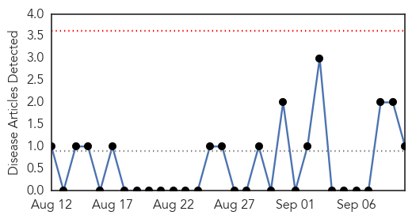
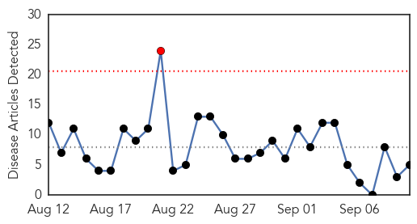
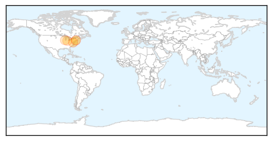

Mold/Fungal
30-Day Web Trend
0 alerts, 0 warnings

30-Day Twitter Trend
0 alerts, 0 warnings

Article Locations

Article Confidences

Top Articles:
Top Tweets:
-
No tweets found for Sep 10, 2015
West Nile Virus
30-Day Web Trend
1 alerts, 0 warnings

30-Day Twitter Trend
1 alerts, 0 warnings

Article Locations
Article Confidences

Top Articles:
- 0.960
- Yakima Health District Finds 5 Cases of Chikungunya in Yakima Co - NBC Right Now/KNDO/KNDU Tri-Cities, Yakima, WA
- 0.901
- 2 Bridgeport resident test positive for West Nile virus
- 0.808
- West Nile virus found in DeKalb County
- 0.710
- St. Clair County reports West Nile virus death
- 0.549
- Howard Beach man contracts West Nile
Top Tweets:
-
No tweets found for Sep 10, 2015